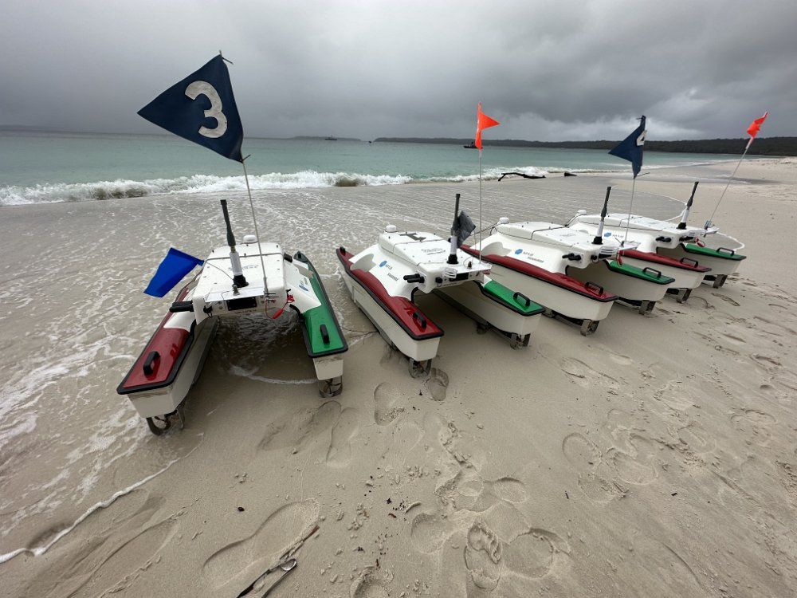

Previous Competitions
We have internally within the leadership team held maritime capture the flag competitions over the past three years. The first two we spent investigating the 1v1 scenario, and deploying our algorithms on WestPoint's hardware robots courtesey of Misha Novitzsky. In 2023 the pyquaticus simulator was developed at MIT Lincoln Labs which allows for more effective multiagent trainng allowing us to look at the more complex 2v2 scenario where we deployed on physical robots in Jervis bay Australia. We have also held internal competitions at the Naval Research Laboratory between interns.